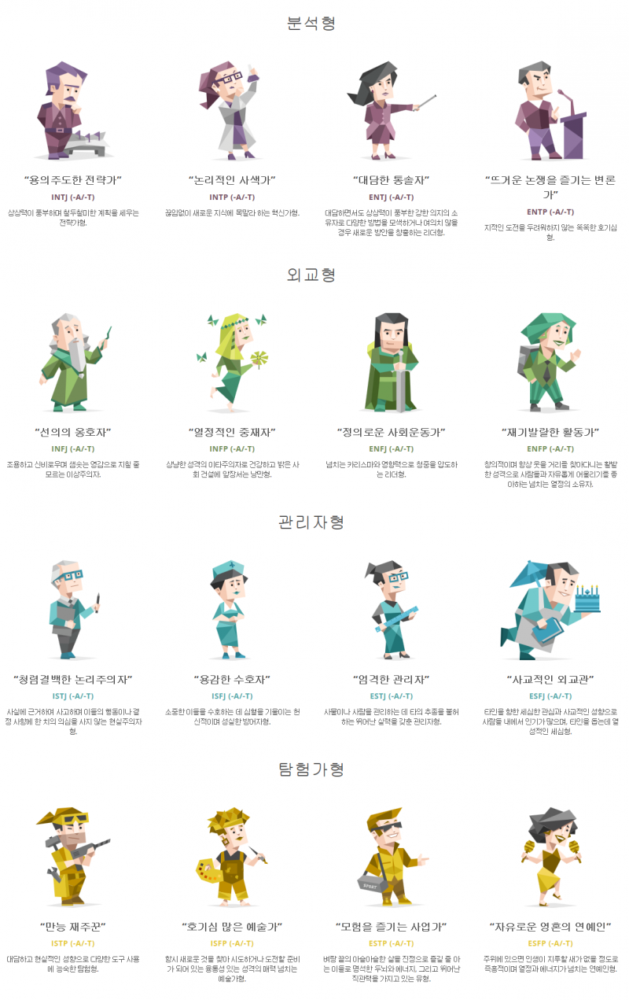

MBTI에서는 두 개의 태도지표(외향-내향, 판단-인식)와 두 개의 기능지표 (감각-직관, 사고-감정)에 대한 개인의 선호도를 밝혀서 4개의 선호문자로 구성된 개인의 성격유형을 알려준다. 따라서 MBTI 검사결과로 생길 수 있는 성격유형은 모두 16가지이다.
각 유형들의 문서에 적힌 내용들을 너무 믿지 않는 편이 좋다. MBTI 과몰입자들의 편향된 서술[2]이나 밈, 스테레오 타입에 갇혀 있는 서술[3], 잘못된 지식에 기반한 서술[4] 같은 오류들이 언제든지 서술될 수 있기 때문이다.